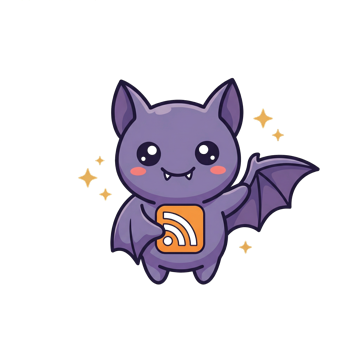

FeedBat
⚙️
Settings
Auto-detect feeds on page load
Show potential feed links
Show badge count
Auto-probe common feed paths
Done
Detecting feeds...

No feeds detected on this page.
Check common paths
Feeds Found
Potential Feeds
These links might be feeds: